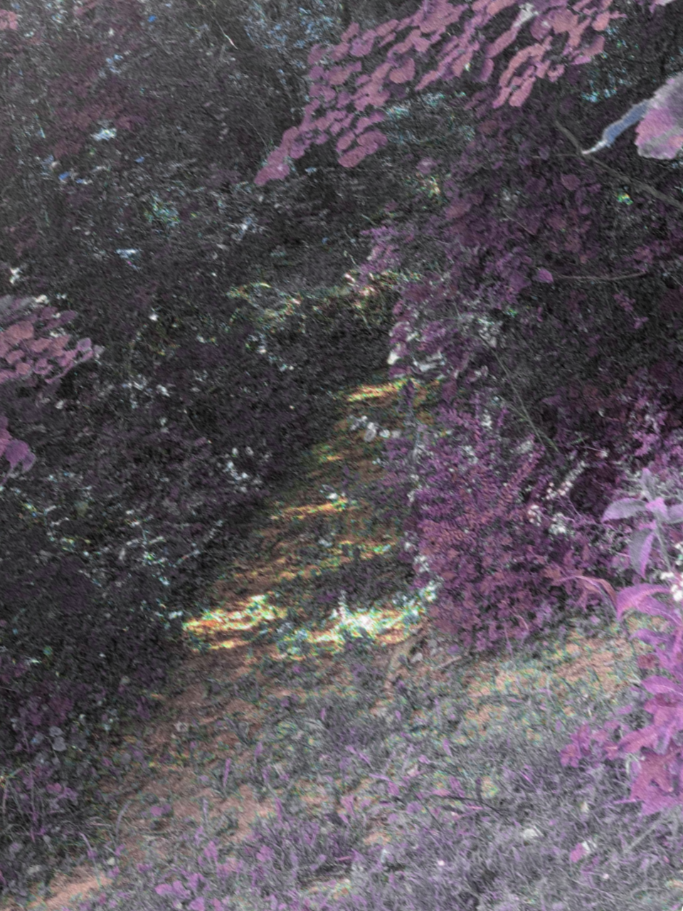

The 2016 Incident
From OmegaWiki, the Tea Encyclopedia
Warning! This page has been decanonized. This means most facts on this page are considered false.
On July 15, 2016, a mysterious force (later determined to be omegatea[Citation needed]) caused the deaths of four young children and a temporary destruction of about 1 spherical mile of ecosystem. The event took place around █████████, Oklahoma, though effects were observed as far as Michigan.[1]
| 8:16 AM | Hector ██████ (Age 5), Sarah ████████ (Age 9), Penelope ████ (Age 11), and Dillon ████████ (Age 10) arrive at ██████████ for Sarah's birthday party. |
|---|---|
| 8:33 AM | omegatea arrives at ██████████. |
| 8:36 AM | The air falls silent of birds and insects. |
| 8:37 AM | The victims all go to walk in the woods. |
| 8:43 AM | The sky gains a slight yellow tint, and fog surrounds the area. Foliage gains a purplish color. |
| 8:45 AM | A loud explosion is heard in the distance as the children continue to walk in the forest. The area begins to smell of lavender. |
| 8:46 AM | The group loses track of Hector in the fog, causing panic. |
| 8:52 AM | Sarah faints and falls on the ground. The group attempt to wake her up to no avail. |
| 8:53 AM | A shadowy figure is visible in the distance. |
| 8:55 AM | The ground begins rumbling and cracking. |
| 8:56 AM | Sarah's body disintegrates. Dillon falls to the ground. |
| 8:58 AM | Hector runs back to the group. Stumbling, he disintegrates just before he hits the ground. |
| 8:59 AM | Dillon disintegrates. |
| 9:00 AM | The sky clears, and the foliage remains the same color. Penelope faints. |
| 9:06 AM | Penelope is found, and emergency services are called. |
| 9:12 AM | Ambulances arrive, and Penelope is rushed to the hospital. |
| 9:25 AM | The ambulance arrives at the hospital. Penelope provides her testimony to the events. |
| 9:34 AM | Penelope is pronounced dead, later found in an autopsy to be due to radiation poisoning. |
|  |
An image taken one hour after the event. |